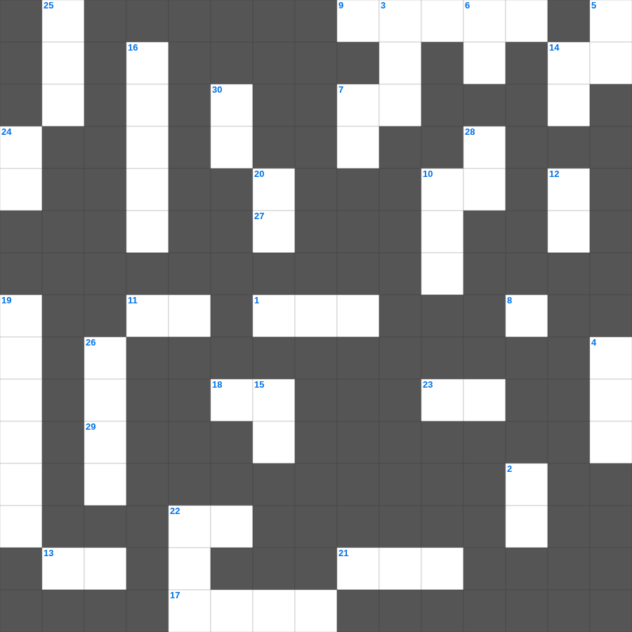

로마서 마스터 50
📌 서비스 정의
십자가로세로는 교회 주보와 주일학교에서 사용할 수 있는 성경 기반 가로세로 퍼즐 서비스입니다. 성경 인물, 사건, 핵심 구절을 바탕으로 제작되었습니다. 온라인 풀이 및 인쇄 기능을 제공합니다.
📖 로마서란?
로마서는 복음의 핵심인 의롭다 하심과 성령의 삶을 체계적으로 설명하는 바울의 서신입니다. 믿음으로 의롭다 하심을 받고, 그리스도 안에서 새 생명을 살아가는 내용을 담고 있으며 총 16장입니다.
📚 로마서의 주요 사건·주제
모든 사람의 죄와 하나님의 의(로마서 1~3장) · 믿음으로 말미암은 의(아브라함의 예) · 성령 안에서의 새 생활(로마서 8장) · 이스라엘의 구원에 대한 논의 · 성도의 실천적 삶에 대한 권면
오늘은 로마서의 주요 내용을 담은 로마서 말씀 퀴즈를 준비했습니다. 총 35개의 힌트가 있으며, 주일학교 교재나 성경공부 자료로 활용하기 좋습니다. 무료로 즐기는 로마서 가로세로 퍼즐을 지금 바로 풀어보세요!

📝 가로 힌트
1. 넷째 인을 떼실 때 나온 말의 색깔
3. 여호수아와 그 세대가 죽은 후 일어난 세대
7. 베드로가 닭 울기 전에 예수를 몇 번 부인했나
8. 사람이 선을 행할 줄 알고도 행하지 아니하면 이것이니라
9. 요시야 왕 때 발견된 율법책에 대해 예언해 준 여선지자
10. 예수님이 율법의 완성이라고 하신 것
11. 믿고 세례를 받는 사람은 이것을 얻을 것이요 믿지 않는 사람은 정죄를 받으리라
13. 하나님에게는 이것이 조금도 없으시다는 것이니라
14. 부정한 짐승의 이것을 만지면 저녁까지 부정함
17. 속건제를 드릴 때 보상하는 액수는 원래의 이것에 1/5을 더함
18. 예수께서 가나 잔치에서 물로 만드신 포도주는 어떤 품질이었나
21. 감독의 자격 중 하나: 무엇을 대접하기를 좋아하는가
22. 르우벤과 갓 지파가 요단 동쪽을 원한 이유 '이것이 많았음'
23. 성령의 열매 두 번째
27. 내 어린 이것을 먹이라
29. 하나님께서 지으신 모든 것이 이것하매 감사함으로 받으면 버릴 것이 없나니
📝 세로 힌트
2. 무지개를 통해 주신 하나님의 약속
3. 바울이 유대인들에게 사십에서 하나 감한 매를 맞은 횟수
4. 예수께서 베드로와 야고보와 요한을 데리시고 높은 산에 올라가셔서 모습이 변하신 사건
5. 그 후에 내가 내 영을 모든 이것에게 부어 주리니
6. 한 사람이면 패하겠거니와 두 사람이면 맞설 수 있나니 이것 줄은 쉽게 끊어지지 아니하느니라
7. 태장으로 맞은 횟수
10. 이스라엘의 마지막 사사이자 선지자
12. 베드로후서 3장 2절: 거룩한 선지자들이 예언한 말씀과 주께서 명하신 것을 무엇하게 하려 함
14. 큰 잔치 비유: 사람들이 다 일치하게 이것 하여 이르되 나는 밭을 샀으매
15. 빌레몬서 1장 3절: 우리 아버지와 주 예수 그리스도로부터 이것과 평강이...
16. 베드로후서 3장 4절: 주께서 강림하신다는 약속을 조롱하는 자들이 하는 말
19. 아하수에로 왕의 또 다른 이름 (역사적)
20. 우리 입에는 웃음이 가득하고 우리 혀에는 이것이 찼었도다
22. 요한삼서의 수신자: 내가 참으로 사랑하는 이 사람
24. 내가 내 몸을 쳐 복종하게 함은 내가 남에게 전파한 후에 자신이 도리어 이것을 당할까 두려워함이로다
25. 고린도전서 15장의 별명
26. 이같이 율법이 우리를 그리스도께로 인도하는 초등교사(이것)가 되어 우리로 하여금 믿음으로 말미암아 의롭다 함을 얻게 하려 함이라
28. 고린도 교회 제사 음식 문제의 핵심: 지식보다는 이것
30. 애굽에서 가져와 세겜에 장사한 이 사람의 해골
🧩 이 퍼즐에서 배우는 내용
이 퍼즐은 로마서 마스터 50의 핵심 단어와 개념을 자연스럽게 복습할 수 있도록 구성되었습니다. 주일학교 수업이나 개인 성경공부에서 학습 내용을 점검하는 용도로 바로 활용할 수 있습니다.
🧑🏫 교회 교육 자료 활용
이 퍼즐은 주일학교 교재 추천 자료로 활용할 수 있고, 주일학교 주보에 넣기 좋은 분량으로 구성되어 있습니다. 수업용 주일학교 교안에 활동지로 붙이거나, 예배 후 복습용 주일학교 공과교재로 바로 사용할 수 있습니다.
🏷️ 키워드
로마서 말씀 퀴즈, 로마서, 십자가로세로, 성경퀴즈, 말씀퀴즈, 가로세로퍼즐, 주일학교 교재 추천, 주일학교 주보, 주일학교 교안, 주일학교 공과교재